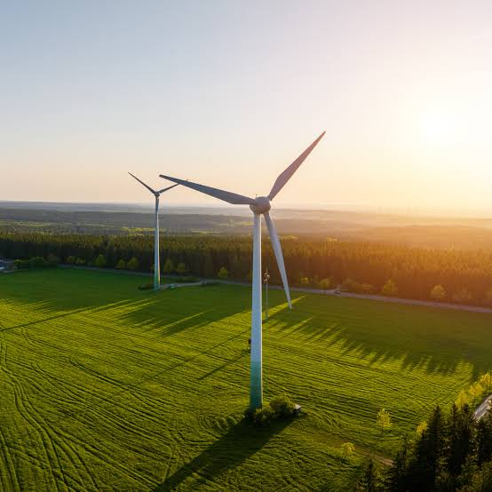
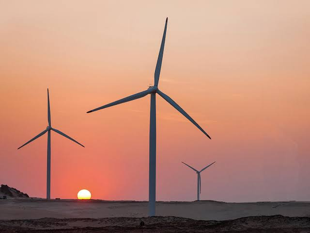
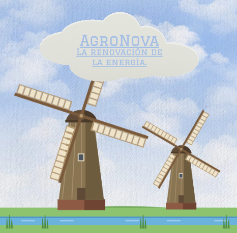
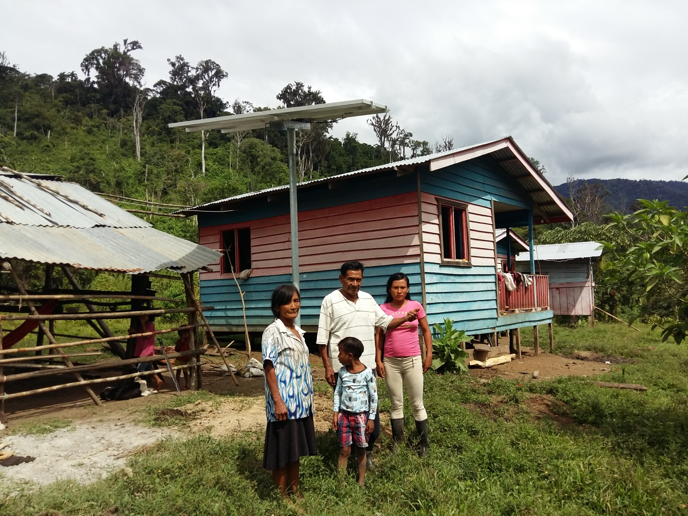
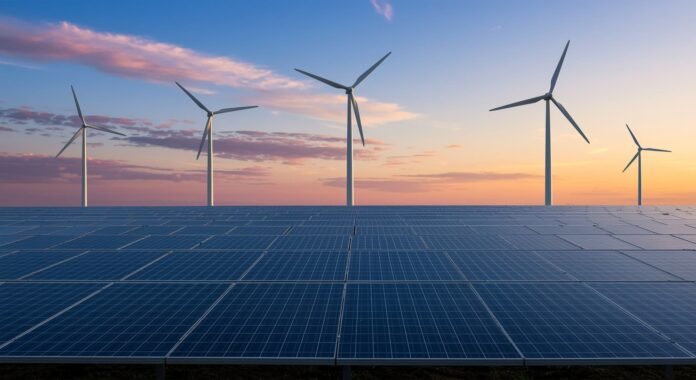

1. Asesoría y selección
El cliente explora el catálogo o consulta al equipo de AgroNova. Revisamos el uso, consumo y recurso eólico del sitio para orientar la selección de equipos y componentes compatibles.


AgroNova comercializa aerogeneradores de alta eficiencia y componentes eólicos, como inversores, controladores de carga, repuestos y kits de monitoreo remoto. El catálogo digital se complementa con asesoría para elegir, equipar, reparar o actualizar instalaciones.
El cliente explora el catálogo o consulta al equipo de AgroNova. Revisamos el uso, consumo y recurso eólico del sitio para orientar la selección de equipos y componentes compatibles.
Se definen los productos necesarios —aerogeneradores, inversores, controladores, repuestos o kits de monitoreo— y se aclaran precio, disponibilidad y compatibilidad antes de realizar el pedido.
Después de la compra, AgroNova brinda orientación para el uso y soporte para mantenimiento, reparación o actualización. El acompañamiento para instalación se coordina según las necesidades del proyecto.
La propuesta reúne una identidad visual para la marca y ejemplos de las soluciones que ofrece: generación eólica, energía para comunidades aisladas y sistemas híbridos. Las fotografías de instalaciones son referencias visuales, no instalaciones atribuidas a AgroNova.


